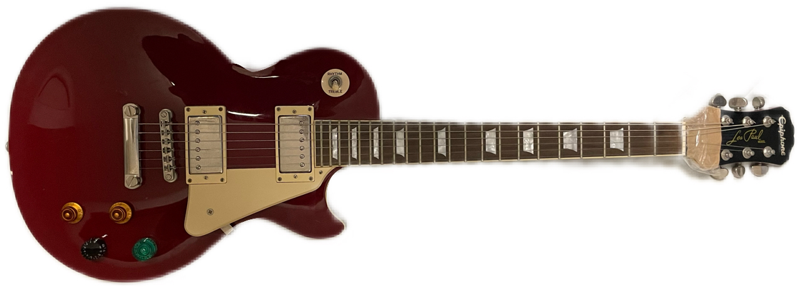
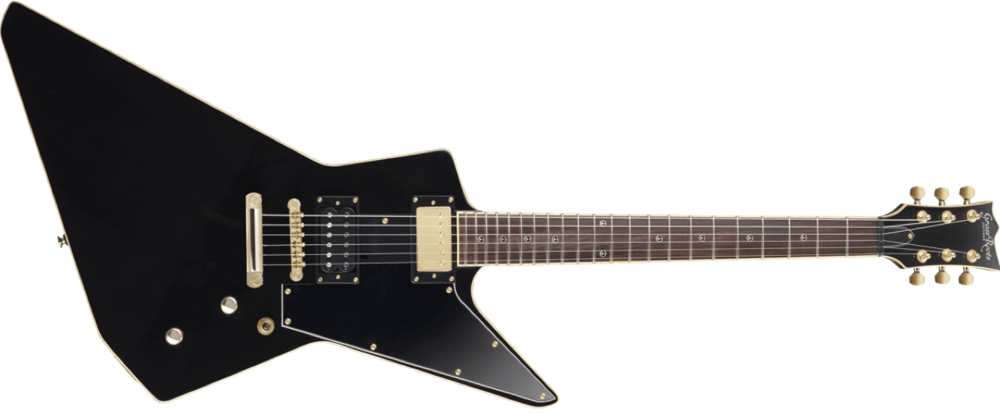
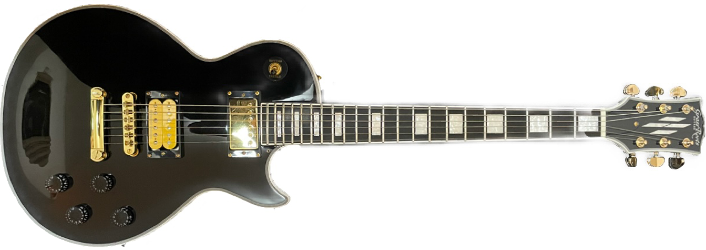
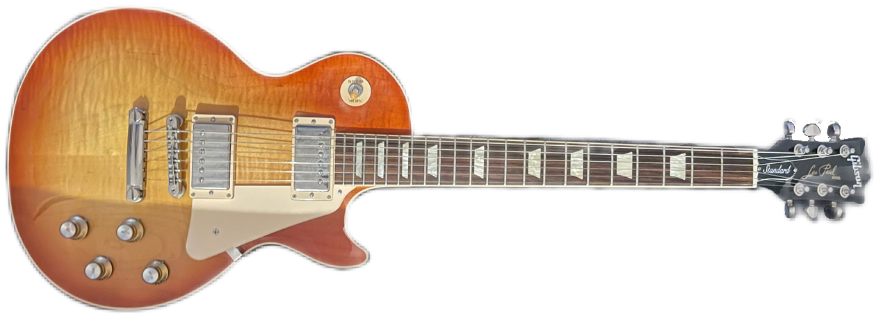
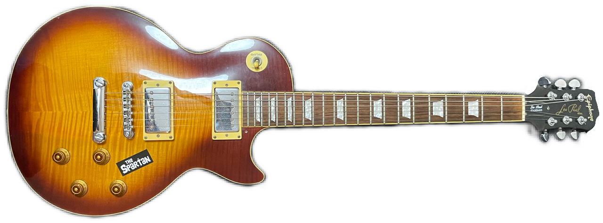

ㅤㅤㅤㅤㅤ
ㅤㅤㅤㅤㅤ
ㅤㅤㅤㅤㅤ
ㅤㅤㅤㅤㅤ
●使用ギター
1代目 詳細不明 謎のストラト
.png)
先に妹のために親が知り合いから貰ってきたやつだけど妹がやめたから自然に僕の手に回ってきたギター いや ヘッドにメーカー書いてないってなに？ ボディーの裏にもどこにもメーカー書いてないぞ 多分ネック変えてある 色はマジで好み 音も「ストラトです」って感じ 斜陽弾くから使い始めてそれから地味に使ってる
2代目 G5230T ELECTROMATIC® JET™ FT シングルカット、BIGSBY®

正式に自分のものになった初めてのギター 好きなバンドのレーベルのステッカーをトラスロッドカバーに貼っている この画像では貼ってないけど 見た目と色がとにかくかっちょいい ビグスビーついてるし 素材がマホガニーだしピックアップもグレッチのハムバッカーみたいな感じなので音が素晴らしい 惚れた マホガニーハムバッカーとストラトの中間的な音 ビグスビー着いてるからかも ピックアップを変えようか迷ったけど金使いすぎてるからまだ後で
3代目（？）エピフォンレスポールスタンダード

軽音楽部の部室にあったヘッドが折れてるレスポールを『いちいち金かけて捨てるぐらいなら僕にください』って言ったらすんなりくれた 最初はパーツ取るように貰ったんだけどなんか直せたら面白いかなって思って一か八かで直してみたら治った 音も良かった ラッキー ノブも何個か逝ってたから余ってたの付けた
4代目 G-EP 猪狩秀平さんモデル

自分でバイトして初めての買い物で買ったギター！ 直前までレスポールカスタムタイプを買おうと思ってたけどHEY-SMITHっていうバンドのギターを見た瞬間一目惚れして買った どれくらい一目惚れかっていうと、欲しい！って思った2日後に買った マジかっけえ僕のグレッチと違ってPUがハムバッカーなのでセイモアダンカンに出来るじゃないか！やったー！ 追記変えました まあ部内ライブに間に合わないけど部内ライブで使いたい！って思って親に借金して買ったんだけどね
5代目 G-LP CTM

PS5とか色々売ったお金と少ない給料で無理して一気にセイモアダンカンもつけたレスカスタイプ レスポールにしては軽い！ヘッドが落ちやすいのもそれのせいかも？ KenYokoyamaが使ってる『Skate』に思いっきり寄せるつもり 元々は助六を買おうとしてたけど割引とかキャンペーンとかで6千円くらい安くなるし全然売ってない黄色のSH-4売ってるしどうみてもレスカスタイプとかかっこいいし欲しさが助六を通り越してきたから即決めた ちなみにG-EPの借金はまだ残ってる 10/7
親の GIBSON レスポールスタンダード アンバースト

学校から帰ってきたら親が買って帰ってきてたギブソン ラッカー塗装だ！ギブソンだ！って超テンションあがった もともとハムバッカーのテレキャス買おうか迷ってたらしいんだけど店員さんからも「ハイスタとか弾くなら間違いなくレスポール」って言われたのと夢のギターだったのことで買ったらしい
親の エピフォン レスポールスタンダード チェリーサンバースト

家にもともとあったレスポール チェリーサンバーストの癖にちょっと濃いような気もする 弦高が鬼低い 触ってる感じしかしない それなのにビビってない なんじゃこいつ